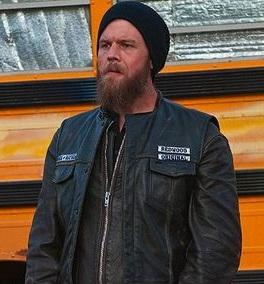

Vice President Jackson Nathaniel "Jax" Teller é um personagem fictício e protagonista da série de televisão FX Sons of Anarchy , interpretada pelo ator Charlie Hunnam . [4] [5] Membro do outlaw motociclista titular , ele passa a série como vice-presidente e, posteriormente, presidente do Clube de Motociclismo Redwood Original (SAMCRO) dos Sons of Anarchy baseado na fictícia Charming, Califórnia. Filho de um dos membros fundadores do clube, seu conflito entre querer manter a longevidade da organização de seu pai reduzindo o elemento criminoso e seu desejo de se tornar um homem de família cumpridor da lei, apesar dos níveis crescentes de violência, constitui o conflito central da série .President Clarence "Clay" Morrow é um personagem fictício da série de televisão FX Sons of Anarchy . Ele é interpretado por Ron Perlman . Morrow, de ascendência irlandesa, é um dos "primeiros 9" membros originais do Sons of Anarchy Motorcycle Club, formado em 1967, mas não foi um dos fundadores. Ele é o ex-presidente internacional do Sons of Anarchy Motorcycle Club , mas também é uma espécie de vigilante, pois faz tudo ao seu alcance para garantir que traficantes e estupradores fiquem fora de sua cidade. No entanto, durante a quarta temporada, Clay envolve o clube no contrabando de drogas com o cartel para sua própria proteção e ganância, vacilando em sua lealdade, e gradualmente se revela um dos antagonistas da história.Men of Mayhem Juan Carlos " Juice " Ortiz [1] é um personagem fictício da série de televisão FX Sons of Anarchy , interpretada por Theo Rossi . [2] Embora Juice exiba grande habilidade técnica em alguns aspectos, ele também provou ser um tanto simplório quando se trata de outras tarefas, muitas vezes recebendo trotes dos outros membros. Seu enredo cresce depois que a polícia o vê como o elo mais fraco do Clube; nas temporadas 5-6, o clube toma conhecimento de suas traições. Em suas cores, ele usa o patch "Men of Mayhem". Ele é um dos três personagens mortos no penúltimo episódio da série, "Red Rose",Gemma Teller Morrow .Sgt. At Arms Filip " Chibs " Telford é um personagem fictício da série de televisão FX Sons of Anarchy e seu spin-off , Mayans MC , interpretado por Tommy Flanagan . [1] Ele é o presidente da carta-mãe do Sons of Anarchy Motorcycle Club de Charming, Califórnia . Antes ele foi o sargento de armas e depois o vice-presidente. Ele é apelidado de "Chibs" por causa de suas cicatrizes faciais (" chib " é uma gíria escocesa para "lâmina de rua" ou arma de esfaqueamento ). [2]As cicatrizes em seu rosto são cicatrizes reais que Flanagan recebeu em uma briga de bar onde seus agressores o marcaram com "o sorriso de Glasgow". [3] Em suas cores , ele usa os seguintes patches: "Sgt. At Arms", "V. President" (substituído por "President"), "Sons of Anarchy" e o patch "In Memory of Opie". Chibs é extremamente leal a Jax Teller e ao clube; ele também tem um bom relacionamento com Tig Trager , Half-Sack Epps (um cliente em potencial que ele patrocinou) e Juice Ortiz , com quem ele tem um relacionamento paternal que termina após a eventual traição de Juice ao clube.Soldado Alexander "Tig" Trager é um personagem fictício da série de televisão FX Sons of Anarchy , interpretada por Kim Coates . [1] Ele é o vice-presidente e ex-sargento de armas do Sons of Anarchy Motorcycle Club s Charming, Califórnia, e é o membro mais violento do clube. Durante as primeiras quatro temporadas do programa, ele usou o patch "Sgt. At Arms" em seu colete e depois da sétima temporada, ele usou o patch "V. President". Ele é extremamente leal a Clay Morrow , o presidente do clube, a esposa de Clay, Gemma , e ao próprio clube.Jax Teller , decorrente do uso da violência em situações que podem não exigir isso.Soldado Happy Lowman é um personagem fictício da série de televisão FX , Sons of Anarchy . Seu nome irônico é baseado no de Happy Loman da peça Death of a Salesman de Arthur Miller . Lowman é interpretado pelo Hells Angel David Labrava da vida real . [1] [2] [3] Lowman é o executor do Sons of Anarchy Motorcycle Club e é afiliado ao contrato de Tacoma, Washington, no início da série, mas depois se torna um nômade. (não tem carta patente permanente). No episódio "The Push", ele é um membro atualizado (oficial) do contrato original do Sons of Anarchy Motorcycle Club Redwood (SAMCRO). Na 6ª temporada, ele é o sargento de armas da SAMCRO.Secretario Robert "Bobby" Munson , é um personagem fictício da série de televisão FX Sons of Anarchy , interpretado por Mark Boone Junior . [1] Ele era o secretário e ex-vice-presidente do Sons of Anarchy Motorcycle Club 's Charming, na Califórnia . Bobby é inteligente e equilibrado (uma característica incomum entre seus companheiros de clube), mas não tem medo de usar a violência quando necessário.

Soldado Harry "Opie" Winston é um personagem fictício da série de televisão FX Sons of Anarchy , interpretada por Ryan Hurst . [1] Ele era membro do Sons of Anarchy Motorcycle Club, filho do co-fundador da SAMCRO, Piney , membro da SAMCRO e melhor amigo de Jax desde a infância.